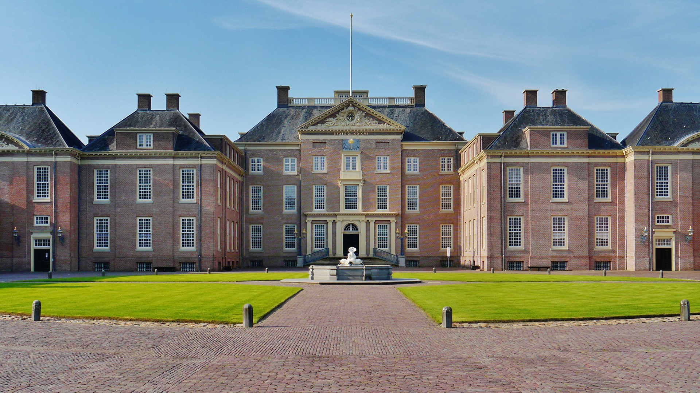

Paleis Het Loo
Activiteiten
- Paleistuinen
3 april 2021 - 26 september 2021
Bewonder de 17e-eeuwse, barokke paleistuinen vol fonteinen, parterres, beelden en bijzondere beplanting.
- Stallen & Koetshuizen
3 april 2021 - 26 september 2021
Het Stallenplein bevindt zich direct na de entree. In de Koetshuizen zie je de koninklijke rijtuigen, auto’s en sleden van dichtbij!
- Blauw & Bont
1 juni 2021 - 26 september 2021
Er zijn bijzondere Delfts aardewerken tuinvazen te zien. De originelen zijn in de 17e eeuw gemaakt voor Koning-Stadhouder Willem III en Koningin Mary.
- Dieren van Oranje
3 april 2021 - 26 september 2021
Van schoothondje tot olifant… In ‘Dieren van Oranje’ wordt met foto’s, films, prenten en verrassende verhalen de bijzondere band geïllustreerd tussen de Oranjes en hun dieren.
- The Garden of Earthly Worries
3 april 2021 - 26 september 2021
‘The Garden of Earthly Worries’ is een presentatie van vier imposante eigentijdse sculpturen naar ontwerp van de architect Daniel Libeskind.
- Speelpaleis Het Loo
3 april 2021 - 26 september 2021
Waan je een prins of prinses in de mini-speeltuin Speelpaleis Het Loo!
- High tea
3 april 2021 - 26 september 2021, om 15:00, PHG
Geniet van een royale high tea in de Prins Hendrik Garage. Reserveren vanaf 2 personen.
- Museumshop
3 april 2021 - 26 september 2021, Entreegebouw
In de Museumshop vind je allerlei producten, van keramiek tot thee.
Website Paleis Het Loo
